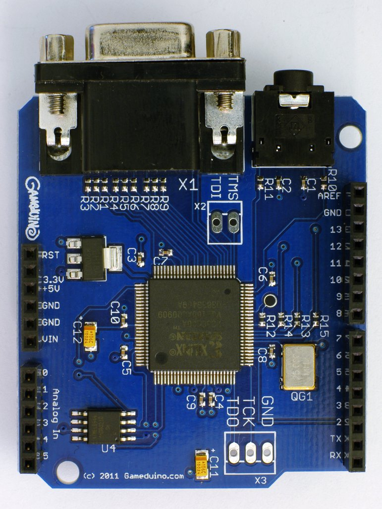
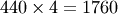

Hardware Technical Reference¶
A overview of the Gameduino hardware is given in this PDF poster.
This section gives a more technical description of hardware, and some techniques for using it efficiently.
Physical connections¶
{kind=link}
Gameduino is a standard Arduino shield. Its required connections are
| GND | Signal ground |
| 3.3V | VCC |
| 5V | Main supply: 3-6V |
| 11 | SPI MOSI |
| 12 | SPI MISO |
| 13 | SPI SCK |
| 9 | SPI SEL |
In addition pin 2 may be used as an auxiliary control, see IOMODE below.
Low-level SPI interface¶
The Gameduino appears to the microprocessor as an SPI peripheral, with two commands: read memory and write memory. The Gameduino’s total memory is 32Kbytes, so addresses are 15-bit. The remaining bit indicates read/write, shown below.
To read memory, the microprocessor selects the Gameduino, then issues a read memory command:
high byte
low byte
...
each subsequent byte read returns the next memory location.
The write memory command operates similarly:
(high byte | 0x80)
low byte
...
and also allows a block write simply by continuing to send bytes.
As an example, the Arduino can copy location 0x0113 to 0x0a00 with this code:
digitalWrite(9, LOW); // start SPI transaction
SPI.transfer(highByte(0x0113)); // start read from 0x0113
SPI.transfer(lowByte(0x0113));
byte value = SPI.transfer(0); // read byte at 0x0113
digitalWrite(9, HIGH); // end SPI transaction
digitalWrite(9, LOW); // start SPI transaction
SPI.transfer(highByte(0x0a00) | 0x80); // start write to 0xa00
SPI.transfer(lowByte(0x0a00));
SPI.transfer(value); // write byte at 0x0a00
digitalWrite(9, HIGH); // end SPI transaction
These operations are more conveniently handled by The GD library:
GD.wr(0xa00, GD.rd(0x113));
Background graphics¶
The 64x64 character screen RAM, together with the character/palette RAMs define the background image. This image is 512x512 pixels, from which the hardware displays a 400x300 window. The SCROLL_X and SCROLL_Y registers control the location of the top-left corner of this window. The display window wraps around the 512x512 screen area, so an infinite scrolling area is possible, as shown by sample scroll.
Memory at 0000-0FFF (RAM_PIC) is a 64x64 grid of byte character codes. The hardware uses the character code to look up the character image and palette in memory areas 1000-1FFF (RAM_CHR) and 2000-27FF (RAM_PAL). So for each displayed pixel, the hardware:
- looks up the character code in RAM_PIC
- looks up that character’s pixel in RAM_CHR
- looks up that character’s pixel’s color in RAM_PAL
1000-1FFF (RAM_CHR) specifies the 2-pixel 8x8 image for each of the 256 characters. Layout is top-left to bottom-right, pixels are packed four in each byte, with the leftmost pixel in the most significant two bits.
2000-27FF (RAM_PAL) specifies the four colors used by each of the 256 characters. See Colors. If a color value’s A bit is set, then the color is taken from register BG_COLOR instead.
For a smooth scroll, wait for vertical blank before updating the scroll registers.
By updating offscreen characters, you can implement a much larger scroll area.
Sprite graphics¶
The hardware always draws sprites in order, from lower-number to higher. So higher-numbered sprites appear in front of lower-numbered sprites. Sprite coordinates are 9-bit numbers 0-511. (0,0) is the top left corner of the screen. Sprites can appear partially offscreen.
Memory at 3000-37FF (RAM_SPR) holds the control data for the 256 sprites. There are two sprite pages to allow double-buffered display. The displayed page is selected by register SPR_PAGE. Each sprite is controlled by a 32-bit value:
- collision class (J or K) membership (bit 31) (see example jkcollision)
- source image 0-63 (bits 25-30)
- Y coordinate 0-511 (bits 24-16)
- palette select 0-15 (bits 12-15) (see example palettes)
- For 256 color sprites (bits 14-15 = 00) bits 12-13 specify the palette, see below
- For 16 color sprites (bits 14-15 = 01) bit 13 specifies the source nibble, and bit 12 specifies the palette A/B
- For 4 color sprites (bit 15 = 1) bits 13-14 specify the source bit pair (00 is lsb, 11 is msb), and bit 12 specifies the palette A/B
- rotation and flip 0-7 (bits 11-9) (see example rotate)
- X coordinate 0-511 (bits 8-0)
Memory at 3800-3FFF (RAM_SPRPAL) holds the four color palettes available for 256-color sprites. Each palette is a block of 256 colors (512 bytes). For sprites, bit 15 (A) of a color value true indicates transparency.
Memory at 4000-7FFF (RAM_SPRIMG) holds the 64 sprite images. Each image is 256 bytes, one byte per pixel for the 16x16 sprite. Using the sprite palettes means that a single 256-byte sprite image can hold 1 256-color image, 2 16-color images or 4 4-color images.
Sound¶
The hardware’s sound is based on a system of additive synthesis. There are 64 indpedent voices: each voice generates a tone at a specific frequency. These tones can be a simple sine wave or white noise. In addition to a frequency value (measured in 1/4 Hz), each voice has a waveform select bit (sine vs noise), and left and right amplitude values. To avoid clipping, the amplitudes for all voices should sum to 255 or less for left channel and right channel.
The layout of each voice control register is described below under VOICES.
Registers¶
2800 (IDENT) Gameduino identification - always reads as 0x6D
2801 (REV) Hardware revision number. High 4 bits are major revision, low 4 bits are minor.
2802 (FRAME) is the frame counter, 1 byte, read-only.
2803 (VBLANK) is the vertical blanking flag, set when the display system is in the vertical blank period. The vertical blank is about 1.3 ms long (http://tinyvga.com/vga-timing/800x600@72Hz). 1 byte, read-only.
2804 (SCROLL_X) is the horizontal pixel scroll register. 2 bytes 0-511, read-write.
2806 (SCROLL_Y) is the vertical pixel scroll register. 2 bytes 0-511, read-write.
2808 (JK_MODE) is the sprite JK mode enable control. 1 byte 0-1, read-write.
2809 (J1_RESET) coprocessor reset: write 1 to hold the coprocessor in a reset state, 0 to release
280A (SPR_DISABLE) sprite disable, 0 enable sprite display, 1 disable sprite display
280B (SPR_PAGE) sprite page select: 0 display from locations 3000-33FF, 1 from 3400-37FF
280C (IOMODE) controls the behavior of pin 2:
- 0x00 - pin 2 ignored
- 0x46 (ascii ‘F’) - pin 2 is onboard SPI dataflash enable
- 0x4A (ascii ‘J’) - pin 2 under coprocessor control
280E (BG_COLOR) background color, used when background color is transparent
2810 (SAMPLE_L) audio left sample, 2 bytes, signed. read-write.
2812 (SAMPLE_R) audio right sample, 2 bytes, signed. read-write.
281E (SCREENSHOT_Y) screenshot Y line sample register, 2 bytes. To read the pixels of a screen line Y, load this register with (0x8000 | Y), then wait until the high bit of SCREENSHOT_Y reads 1. The pixel data can then be read from the 800 bytes of SCREENSHOT RAM. The low 9 bits of this register always hold the current Y scanline value, 0-299. To disable screenshot, write zero to SCREENSHOT_Y.
2840 (PALETTE16A) the 16 color sprite palette, A. 32 bytes, read-write. See Colors for format.
2860 (PALETTE16B) the 16 color sprite palette, B. 32 bytes, read-write. See Colors for format.
2880 (PALETTE4A) the 4 color sprite palette, A. 8 bytes, read-write. See Colors for format.
2888 (PALETTE4B) the 4 color sprite palette, B. 8 bytes, read-write. See Colors for format.
2890 (COMM) Coprocessor communication block. 48 bytes, read-write.
2900 (COLLISION) 256-byte collision RAM. At the end of each frame refresh, the collision RAM’s 256 byte entries hold the number of a colliding sprite, or 0xff if the sprite did not cover up any other. In JK_MODE, only sprites with a different J/K value (bit 31 in the sprite’s RAM_SPR entry) will trigger the collision flag. 256 bytes, read-only.
Note
Because the collision RAM is computed during frame scanout, it is only readable during vertical blanking (see the VBLANK register above). COLLISION reads as 0xff at other times.
2A00 (VOICES) is the base of the 64 voice registers. Each register is a 32-bit value:
- frequency (bits 0-14) in Hz multiplied by 4. So 440 Hz is .
- waveform (bit 15) 0 selects sine wave, 1 selects white noise
- left amplitude (bits 16-23)
- right amplitude (bits 24-31)
2B00 (J1_CODE) Coprocessor instruction space, 256 bytes, read-write. See Coprocessor.
2C00 (SCREENSHOT) Screenshot line RAM, 400 pixels. 800 bytes, read-only.
Coprocessor¶
The coprocessor is described in its own section: Coprocessor
Colors¶
Colors are represented in-memory in ARGB1555 format:
- one bit alpha (bit 15)
- five bit red (bits 14-10)
- five bit green (bits 9-5)
- five bit blue (bits 4-0)
Last modified $Date: 2011-06-11 16:44:02 -0700 (Sat, 11 Jun 2011) $